Publications
-
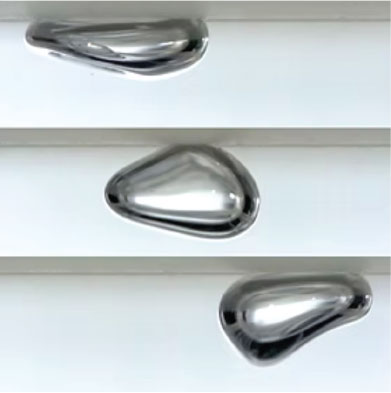
Spontaneous galloping of a vibrating bubble along a solid boundary. Part 1: ExperimentsJ.H. Guan, X. Liu, S.I. Tamim, C.W. Magoon, H.A. Stone, P.J. Sáenz, in review.When held beneath the upper wall of a vertically vibrated fluid chamber by buoyancy, capillary-sized bubbles have been shown to spontaneously break symmetry and self-propel along the wall, exhibiting a gallop-like motion. These `galloping' bubbles become motile in the plane perpendicular to the external driving by virtue of a resonant coupling between axisymmetric and non-axisymmetric shape oscillation modes, which are parametrically excited through the effective gravitational field. Here, we present a comprehensive experimental investigation of the galloping bubbles in terms of the system's principal control parameters, including bubble volume, driving frequency and amplitude, and fluid viscosity. For bubbles of varying sizes, we characterize their equilibrium shapes and resonances under low forcing, interpreting the emergent shape oscillations in terms of those of a hemispherical sessile bubble. At higher driving, we delineate the regions of the parameter space in which bubbles exhibit translational, orbital and run-and-tumble motions, as well as regimes where they detach from the wall or undergo breakup, and provide a characterization of the dynamics in each scenario. We further characterize the instantaneous flow fields surrounding the bubbles and derive a scaling law for the propulsion speed that captures the influence of the bubble geometry. We conclude by investigating the role of viscosity in shifting the instability threshold and galloping frequency, as well as in regulating the mixing of modes responsible for the different galloping states.
-
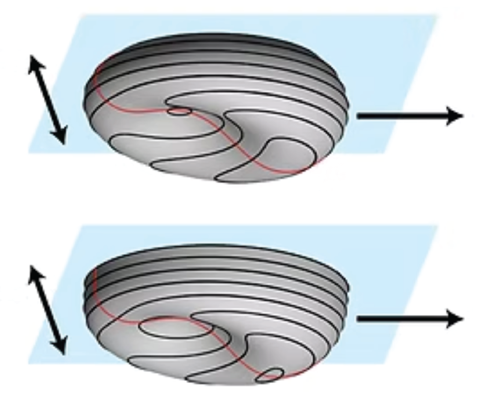
Spontaneous galloping of a vibrating bubble along a solid boundary. Part 2: SimulationsC.W. Magoon, S.I. Tamim, P.J. Sáenz, in review.Using direct numerical simulations, we investigate the ``galloping'' self-propulsion of an incompressible gas bubble underneath a horizontal wall subjected to vertical vibrations. Previous work showed that this spontaneous symmetry breaking arises both for bubbles pressed against the wall by buoyancy but separated from it by a thin film, and for hemispherical sessile bubbles attached to the wall with a freely moving contact line. Here, we present a side-by-side comparison of the two configurations across an extended parameter space. Particular attention is given to the evolution of the interface deformation and its modal spectrum as the driving amplitude increases: from the static base geometry, through harmonic axisymmetric oscillations at weak forcing, to the onset of rectilinear galloping triggered by the destabilization of non-axisymmetric modes. We further demonstrate that the transient propulsion speed grows exponentially in synchrony with a resonant non-axisymmetric shape mode, establishing a direct dynamical link between interfacial deformation and locomotion. We also characterize the associated two-phase flow fields underlying the bubble propulsion. Finally, we show that the steady rectilinear galloping speeds collapse onto power-law scalings in both configurations, and present a first numerical characterization of orbital galloping motion, which arises through a secondary symmetry breaking of the interface.
-
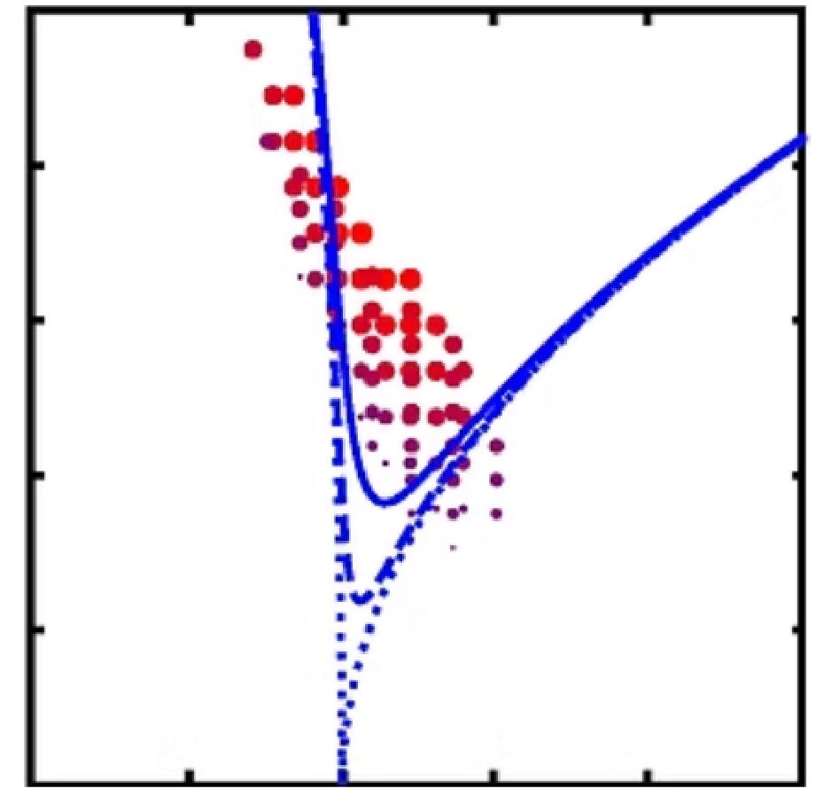
Spontaneous galloping of a vibrating bubble along a solid boundary. Part 3: TheoryS.I. Tamim, C.W. Magoon, P.J. Sáenz, in review.We develop a theoretical framework to rationalize the spontaneous symmetry-breaking instability and propulsion mechanism underlying ``galloping’’ bubbles. We consider an incompressible hemispherical sessile bubble attached to a solid wall with a freely moving contact line and subjected to vertical forcing. Assuming weak viscosity and small interface deformations, we formulate a nearly inviscid potential-flow problem and analyze its stability using a multiple-scale perturbation approach. We show that at low forcing the bubble undergoes harmonic axisymmetric oscillations directly driven by the vertical forcing, while non-axisymmetric modes arise only through parametric instability beyond a critical threshold. We further analyze the nonlinear saturation of the resonant unstable mode and derive expressions for the instability threshold, and the saturated amplitude and phase shift. Approximating the free-surface dynamics by the two dominant modes, we then perform an inviscid momentum balance that rationalizes galloping as a minimal realization of swimming in a perfect fluid, elucidating how net propulsion emerges along a direction where no external forcing is applied, and yielding an expression for the steady galloping speed in terms of the driving parameters. The resulting theoretical scalings are tested against simulations of the full system, showing agreement within the weakly nonlinear regime. Finally, we show that the reduced two-mode propulsion model admits a geometric interpretation in which the propulsion speed is proportional to the area enclosed by closed loops in a reduced shape space, thereby identifying galloping bubbles as a spontaneous realization of nearly inviscid geometric swimming.
-
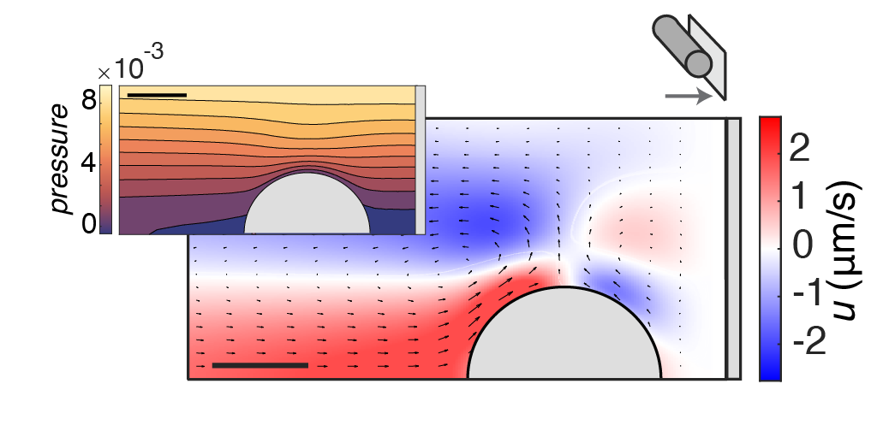
Spontaneous wall suction in stratified fluid: a new phenomenon exhibiting Aristotle’s view of motionT. Britt*, R. Camassa*, R. McLaughlin*, S.I. Tamim*, in review. linkFluids with gravitationally stable density stratification caused by diffusing solutes are ubiquitous in nature and may spontaneously generate flows in the destabilizing presence of immersed bodies. In this paper we document the discovery of a counterintuitive phenomenon: objects in such fluids may self-induce suction forces producing near constant accelerations towards nearby walls, in the absence of any external forces. Intriguingly, the fundamental mechanism is akin to Aristotle’s ancient idea whereby motion is sustained through flows abhorring vacuum generation. Here we present an experimental, computational, and theoretical study to fully explore this new phenomenon. First, experiments exhibiting wall collapse are presented. Next, flow and density structures are measured and compared quantitatively to computational simulations with spheres and cylinders, both in free space and near symmetry-disrupting vertical walls. Further computations reveal a competition between the pressure and viscous stress forces that enable a “lubrication screening,” overcoming the resistance of a thin lubricating layer. In particular, a low pressure region in the gap develops and the particle spontaneously moves to fill the vacuum by being pushed along by ensuing flows. The resulting unexpected motion in a viscous dominated flow propels the particle almost all the way to the wall within a distance scale set by the stratified fluid properties, ultimately decelerating with a soft-landing. Lastly, extensions of these new phenomena to thin and porous geometries are discussed with theoretical and computational predictions showing how the wall-induced motion can be reversed by porosity, pushing the body away from the wall.
-
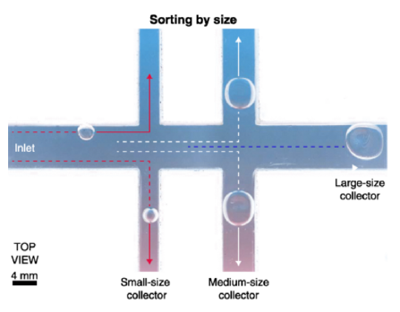
The way bubbles gallopJ.H. Guan, S.I. Tamim, C.W. Magoon, H.A. Stone, P.J. Sáenz, Phys. Rev. Fluids, 10, 110507 (2025). linkThis paper is associated with a video winner of a 2024 American Physical Society’s Division of Fluid Dynamics (DFD) Gallery of Fluid Motion Award for work presented at the DFD Gallery of Fluid Motion. The original video is available online at the Gallery of Fluid Motion, https://doi.org/10.1103/APS.DFD.2024.GFM.V2684816.
-
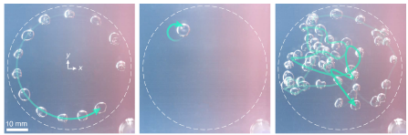
Galloping bubblesJ.H. Guan*, S.I. Tamim*, C.W. Magoon*, H.A. Stone, P.J. Sáenz, Nat. Commun., 16, 1572 (2025). linkDespite centuries of investigation, bubbles continue to unveil intriguing dynamics relevant to a multitude of practical applications, including industrial, biological, geophysical, and medical settings. Here we introduce bubbles that spontaneously start to ‘gallop’ along horizontal surfaces inside a vertically-vibrated fluid chamber, self-propelled by a resonant interaction between their shape oscillation modes. These active bubbles exhibit distinct trajectory regimes, including rectilinear, orbital, and run-and-tumble motions, which can be tuned dynamically via the external forcing. Through periodic body deformations, galloping bubbles swim leveraging inertial forces rather than vortex shedding, enabling them to maneuver even when viscous traction is not viable. The galloping symmetry breaking provides a robust self-propulsion mechanism, arising in bubbles whether separated from the wall by a liquid film or directly attached to it, and is captured by a minimal oscillator model, highlighting its universality. Through proof-of-concept demonstrations, we showcase the technological potential of the galloping locomotion for applications involving bubble generation and removal, transport and sorting, navigating complex fluid networks, and surface cleaning. The rich dynamics of galloping bubbles suggest exciting opportunities in heat transfer, microfluidic transport, probing and cleaning, bubble-based computing, soft robotics, and active matter.
-
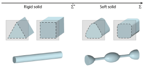
Shaping capillary solids: from statics to dynamicsS.I. Tamim and J.B. Bostwick, Annu. Rev. Cond. Mat. Phys., 16, 173 (2025). linkThe shape of a soft solid is largely determined by the balance between elastic and surface energies with capillarity becoming important at length scales smaller than the elastocapillary length, which approaches the mil- limeter scale for the softest hydrogels, leading to many new and surprising phenomena. This review is focused on describing recent experimental and theoretical progress on the deformations of soft solids due to capillarity in two-phase systems for both statics and dynamics. Relative to rigid solids, surface tension can lead to the rounding of sharp corners, wrinkling and creasing, and general morphological shape change of the static equilibrium configuration, beyond a critical elastocapillary number. With regard to dy- namics, both surface tension and viscoelasticity affect wave number selection in a number of dynamic pattern formation phenomena in soft solids, such as elastocapillary-gravity waves, Rayleigh–Taylor instability, Plateau–Rayleigh instability, Faraday waves, and drop oscillations, all of which have direct analogs with classical hydrodynamic instabilities helping to interpret the relevant physics.
-
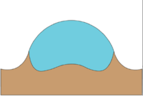
Spreading of a thin droplet on a soft substrateS.I. Tamim and J.B. Bostwick, J. Fluid Mech., 971, A32 (2023). linkA thin liquid droplet spreads on a soft viscoelastic substrate with arbitrary rheology. Lubrication theory is applied to the governing field equations in the liquid and solid domains, which are coupled through the free boundary at the solid–liquid interface, to derive a set of reduced equations that describe the spreading dynamics. Fourier transform techniques and the finite difference method are used to construct a solution for the dynamic liquid–gas and solid–liquid interface shapes, as well as the macroscopic contact angle. Substrate properties affect the spreading dynamics through the contact angle and internal droplet flow fields, and these mechanisms are revealed. Increased substrate softness increases the spreading rate, whereas increased viscoelasticity decreases the spreading rate. For the case of a purely elastic substrate, the spreading power-law exponent recovers Tanner's law in the rigid limit and increases with substrate softness.
-
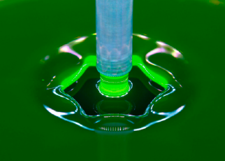
Corner universality in polygonal hydraulic jumpsS.I. Tamim, T. Nichols, J.L. Hansen, T. Bohr, J.B. Bostwick, Phys. Rev. Fluids, 8, L032001 (2023). linkSteady polygonal hydraulic jumps have a complex flow structure and are formed when a circular jump loses stability through an increase in the downstream liquid height beyond a critical value. We report the experimental observation of a universal corner shape in polygonal hydraulic jumps over a wide range of experimental conditions that include the flow rate, weir geometry, and flow history, as defined by the tip radius of curvature and the corner angle. The tip radius of curvature is nearly constant over all experimental conditions, whereas the corner angle weakly depends on gravitational effects. Knowledge of the corner angle allows one to determine the global jump shape, as defined by a dimensionless geometry number related to the isoperimetric inequality, thus giving a complete description of the jump shape.
-
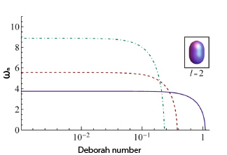
Oscillations of a soft viscoelastic dropS.I. Tamim and J.B. Bostwick, npj Microgravity, 7, 42 (2021). linkA soft viscoelastic drop has dynamics governed by the balance between surface tension, viscosity, and elasticity, with the material rheology often being frequency dependent, which are utilized in bioprinting technologies for tissue engineering and drop- deposition processes for splash suppression. We study the free and forced oscillations of a soft viscoelastic drop deriving (1) the dispersion relationship for free oscillations, and (2) the frequency response for forced oscillations, of a soft material with arbitrary rheology. We then restrict our analysis to the classical cases of a Kelvin–Voigt and Maxwell model, which are relevant to soft gels and polymer fluids, respectively. We compute the complex frequencies, which are characterized by an oscillation frequency and decay rate, as they depend upon the dimensionless elastocapillary and Deborah numbers and map the boundary between regions of underdamped and overdamped motions. We conclude by illustrating how our theoretical predictions for the frequency-response diagram could be used in conjunction with drop-oscillation experiments as a “drop vibration rheometer”, suggesting future experiments using either ultrasonic levitation or a microgravity environment.
-
 Model of spontaneous droplet transport on a soft viscoelastic substrate with nonuniform thicknessS.I. Tamim and J.B. Bostwick, Phys. Rev. E, 104, 034611 (2021). link
Model of spontaneous droplet transport on a soft viscoelastic substrate with nonuniform thicknessS.I. Tamim and J.B. Bostwick, Phys. Rev. E, 104, 034611 (2021). linkDynamic wetting of droplets on soft solids has many industrial and biological applications which require an understanding of the underlying fluid transport mechanism. Here we study the case of a droplet on a viscoelastic substrate of variable thickness which is known to give rise to a spontaneous droplet transport. This phenomenon is known as droplet durotaxis and has been observed experimentally. Here we develop a model assuming a small linear gradient in substrate thickness to reveal the physical mechanism behind this transport phenomena. We show the variable thickness causes an asymmetric deformation along the drop contact line, which causes a variation in the contact angle. This generates a net driving force on the drop, causing it to move in the direction of higher thickness. The resulting drop velocity is determined by balancing the work done by the moving drop with the viscoelastic dissipation of the substrate (viscoelastic braking) and computed from a self-consistent model. We find our results to be in qualitative agreement to previously reported experimental findings.
-
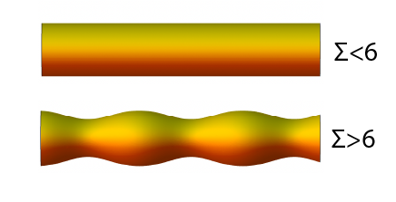
Plateau–Rayleigh instability in a soft viscoelastic materialS.I. Tamim and J.B. Bostwick, Soft Matter, 17, 4170 (2021). linkA soft cylindrical interface endowed with surface tension can be unstable to wavy undulations. This is known as the Plateau–Rayleigh instability (PRI) and for solids the instability is governed by the competition between elasticity and capillarity. A dynamic stability analysis is performed for the cases of a soft (i) cylinder and (ii) cylindrical cavity assuming the material is viscoelastic with power-law rheology. The governing equations are made time-independent through the Laplace transform from which a solution is constructed using displace- ment potentials. The dispersion relationships are then derived, which depend upon the dimensionless elastocapillary number, solid Deborah number, and compressibility number, and the static stability limit, critical disturbance, and maximum growth rate are computed. This dynamic analysis recovers previous literature results in the appropriate limits. Elasticity stabilizes and compressibility destabilizes the PRI. For an incompressible material, viscoelasticity does not affect stability but does decrease the growth rate and shift the critical wavenumber to lower values. The critical wavenumber shows a more complex dependence upon compressibility for the cylinder but exhibits a predictable trend for the cylindrical cavity.
-
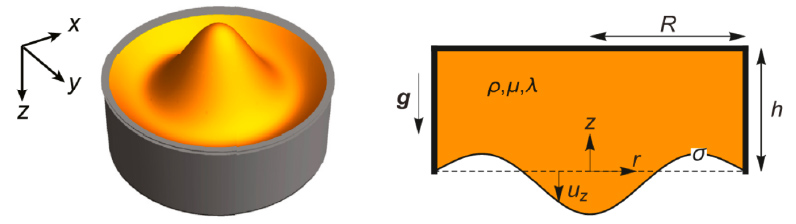
A dynamic analysis of the Rayleigh–Taylor instability in soft solidsS.I. Tamim and J.B. Bostwick, Extreme Mech. Lett., 40, 100940 (2020). linkA soft viscoelastic layer is susceptible to interfacial instability due to self-weight when oriented in a heavy over light configuration. This is the solid Rayleigh-Taylor instability. We perform an elastodynamic stability analysis for the viscoelastic layer in a cylindrical container and compute the dispersion relationship, as it depends upon the dimensionless elastogravity number, elastocapillary number, solid Deborah number, compressibility number, and the aspect ratio. The stability diagram is mapped in the parameter space and we compute the wavenumber and associated growth rate for the dominant mode. The presence of the cylindrical boundary restricts the allowable modes and we show how this affects mode number selection. Our predictions compare favorably to previously reported experimental work in the literature.
-
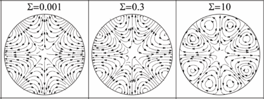
The elastic Rayleigh dropS.I. Tamim and J.B. Bostwick, Soft Matter, 15, 9244 (2019). linkBioprinting technologies rely on the formation of soft gel drops for printing tissue scaffolds and the dynamics of these drops can affect the process. A model is developed to describe the oscillations of a spherical gel drop with finite shear modulus, whose interface is held by surface tension. The governing elastodynamic equations are derived and a solution is constructed using displacement potentials decomposed into a spherical harmonic basis. The resulting nonlinear characteristic equation depends upon two dimensionless numbers, elastocapillary and compressibility, and admits two types of solutions, (i) spheroidal (or shape change) modes and (ii) torsional (rotational) modes. The torsional modes are unaffected by capillarity, whereas the frequency of shape oscillations depend upon both the elastocapillary and compressibility numbers. Two asymptotic dispersion relationships are derived and the limiting cases of the inviscid Rayleigh drop and elastic globe are recovered. For a fixed polar wavenumber, there exists an infinity of radial modes that each transition from an elasticity wave to a capillary wave upon increasing the elastocapillary number. At the transition, there is a qualitative change in the deformation field and a set of recirculation vortices develop at the free surface. Two special modes that concern volume oscillations and translational motion are characterized. A new instability is documented that reflects the balance between surface tension and compressibility effects due to the elasticity of the drop.
*These authors contributed equally.